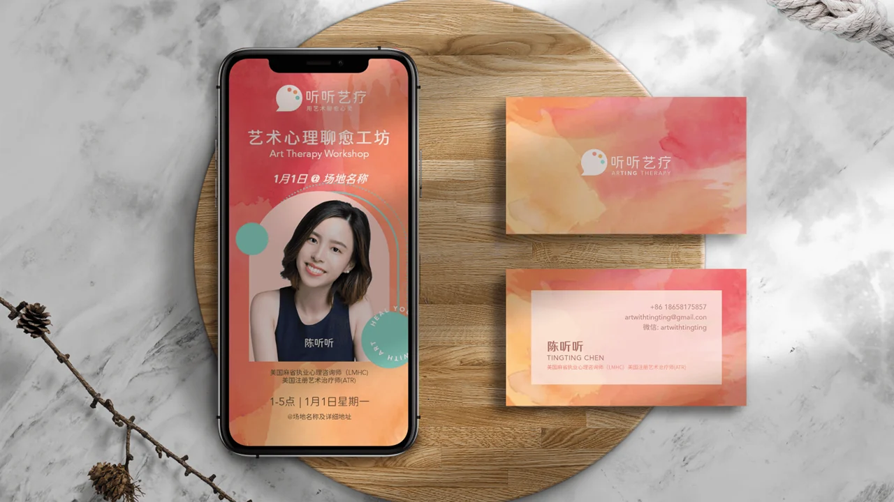
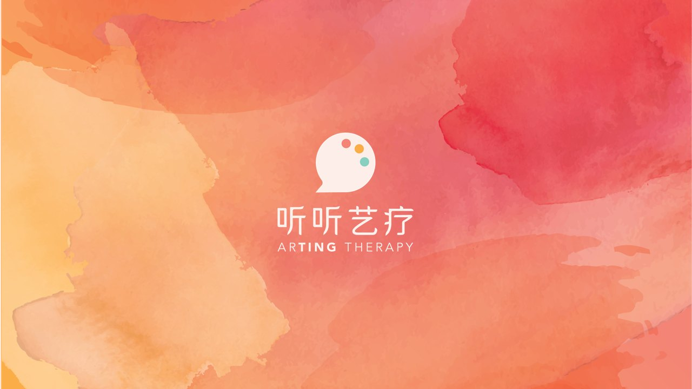
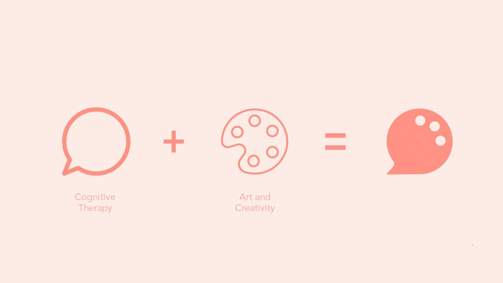
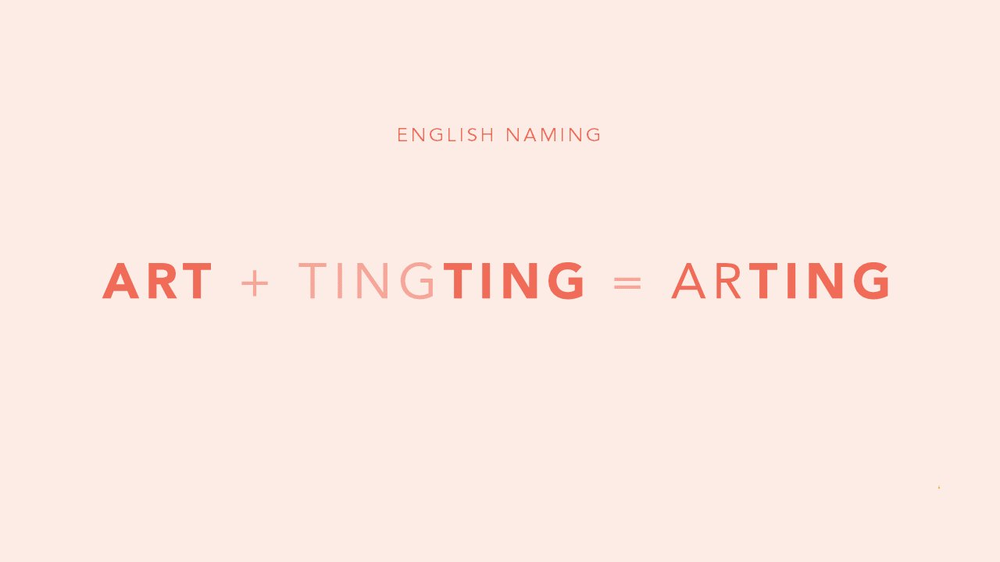
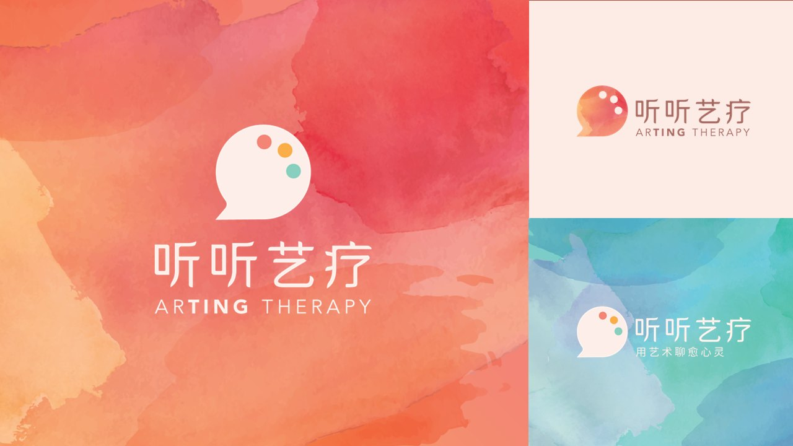
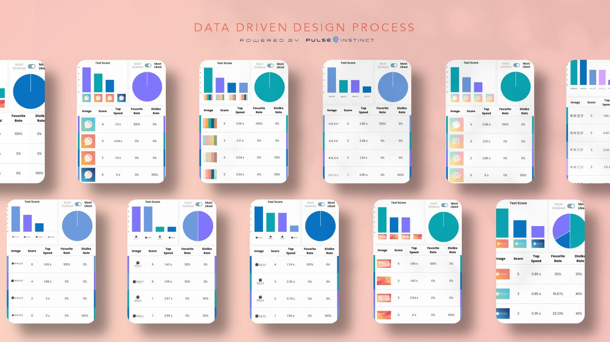
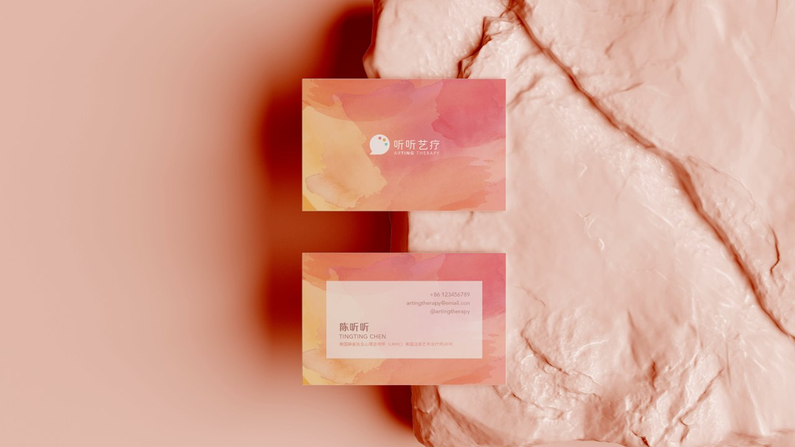
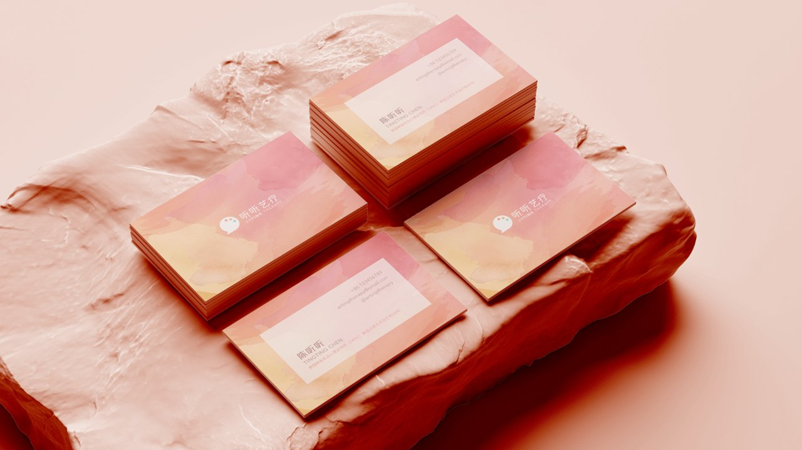
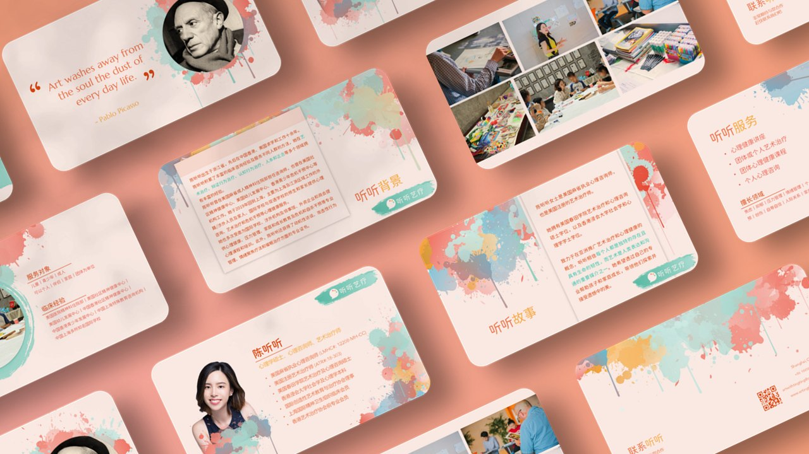

Education · Brand Creation
Where Art
Heals the Heart
ArTing Therapy offers emotional healing through art, transforming pain into creative resilience.

ArTing Therapy
Education · Brand Creation
- Brand Identity
- Visual Design
Tingting Chen · Founder
Compassion. Psychology. Healing.
Goal
Individuals seeking a meaningful approach to addressing emotional challenges and psychological pain.
Solution
Art therapy sessions that empower clients to explore and express their emotions creatively, facilitating healing.
What we delivered.
Brand Identity
Created a brand identity that reflects the transformative power of art.
Visual Design
Developed an artistic visual identity to evoke emotional safety and creative freedom.
The palette
- Light red#f16b59 · Primary
- Light red surface#f48677 · Primary surface
- Warm white#fef4f0 · Secondary
- Warm white shade#fce1db · Secondary shade

The work








In their words
“Fantastic work! I really enjoyed working with the team. Your professionalism, creativity, time management and responsibility really impressed me. I am thankful for such an impeccable experience and the final work is just perfect!”
— Tingting Chen, Founder
Where it landed
ArTing Therapy has become a beacon for emotional resilience, successfully guiding clients on their mental health journeys through art.
Have a similar business problem?
Bring us the problem.
You do not need to know which service you need. Start with the problem, or run the free audit and let the evidence choose the next step.